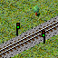
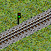
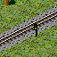
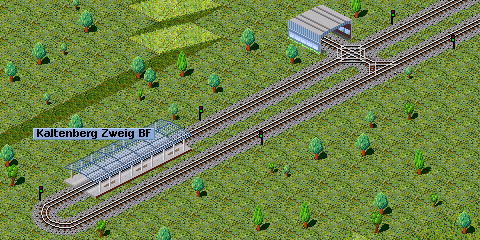
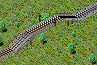

Ein Doppelsignal zwischen zwei Weichen
Wenn mehr als ein Zug eine Strecke benutzen soll, dann muss man Signale einsetzen.
In Simutrans gibt es zwei Signaltypen: Einzel- und Doppelsignale
| Signal | Beschreibung |
|  | Doppelsignal |
|  | Einzelsignal (nach links) |
|  | Einzelsignal (nach rechts) |
Der erste Klick baut ein Doppelsignal, weitere Klicks schalten zu den Einzelsignalen weiter. Das geschieht in der folgenden Reihenfolge:
1.) 2.) 3.)

Haltestelle mit Einfachsignalen und Kreuzung

Ein Signal auf einer Brücke
Ein Doppelsignal zwischen zwei Weichen